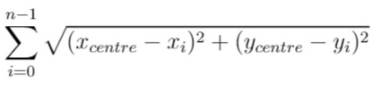
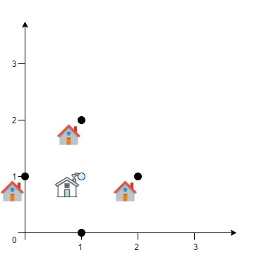
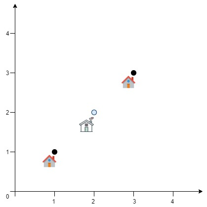

| Category | Difficulty | Likes | Dislikes |
|---|---|---|---|
| Algorithms | Hard | 246 | 274 |
array | math | geometry | randomized
uber | citadel
A delivery company wants to build a new service center in a new city. The company knows the positions of all the customers in this city on a 2D-Map and wants to build the new center in a position such that the sum of the euclidean distances to all customers is minimum.
Given an array positions where positions[i] = [xi, yi] is the position of the ith customer on the map, return the minimum sum of the euclidean distances to all customers.
In other words, you need to choose the position of the service center [xcentre, ycentre] such that the following formula is minimized:

Answers within 10-5 of the actual value will be accepted.
Example 1:

Input: positions = [[0,1],[1,0],[1,2],[2,1]]
Output: 4.00000
Explanation: As shown, you can see that choosing [xcentre, ycentre] = [1, 1] will make the distance to each customer = 1, the sum of all distances is 4 which is the minimum possible we can achieve.Example 2:

Input: positions = [[1,1],[3,3]]
Output: 2.82843
Explanation: The minimum possible sum of distances = sqrt(2) + sqrt(2) = 2.82843
Constraints:
1 <= positions.length <= 50positions[i].length == 20 <= xi, yi <= 100